데이터 기준 2026년 11월 6일 19시 52분(한국 시간): 미국 11월 5일 종가, 한국 11월 6일 종가 · 재검증 2026년 11월 7일 · stayhungryasi.com
미국 11월 6일 장 결과는 반영하지 않았다.
표기 규칙: 수치는 출처 기준 사실이다. '추정'은 작성자 판단이고, 시나리오 확률은 작성자의 주관적 판단이다. 두 차례 전수검증을 거쳤고, 정정·삭제한 항목은 2장 표에 모두 남겼다.
이해충돌 고지: 이 리서치는 앤트로픽의 AI(Claude)를 써서 작성했고, 본문에 앤트로픽의 S-1 손익과 상장 일정이 등장한다. 투자 권유가 아니다.
카드뉴스 12장으로 보기
핵심만 12장으로 요약했다. 이미지를 누르면 크게 볼 수 있다.

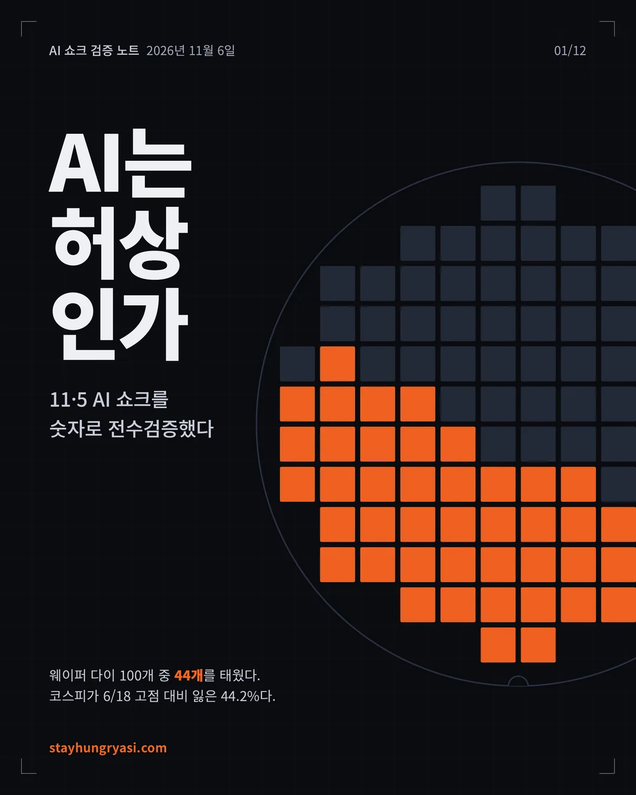

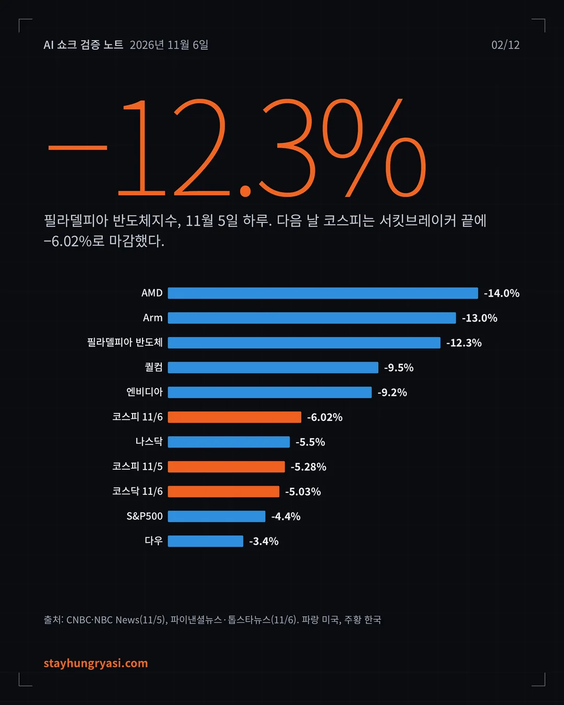

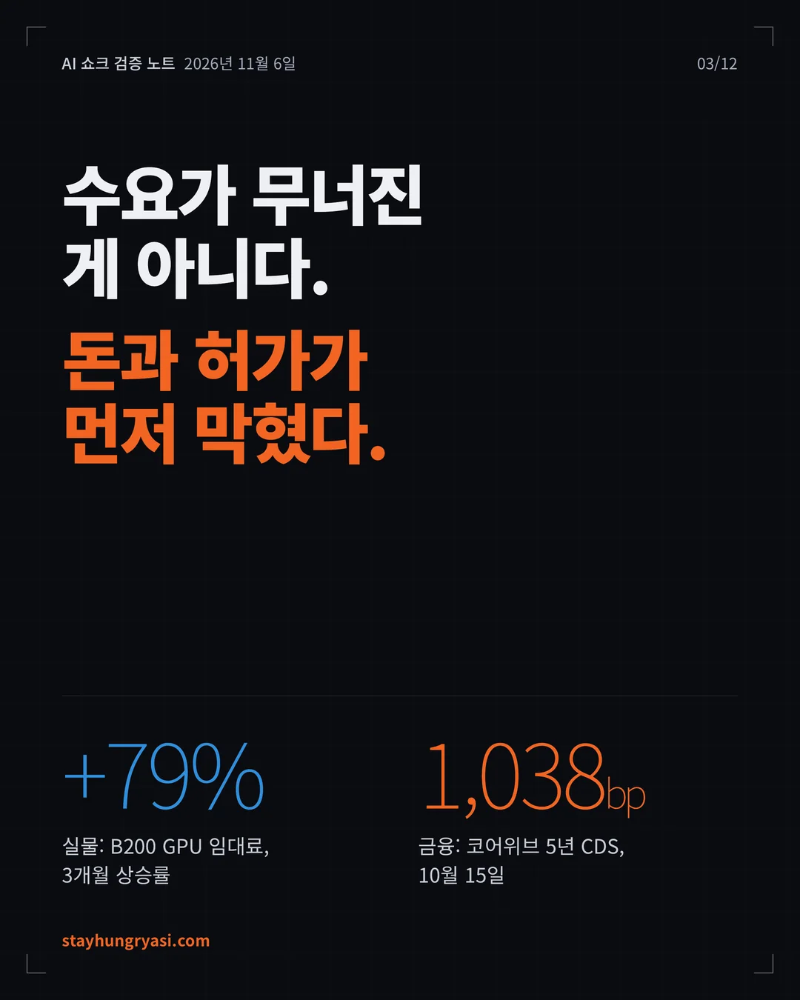

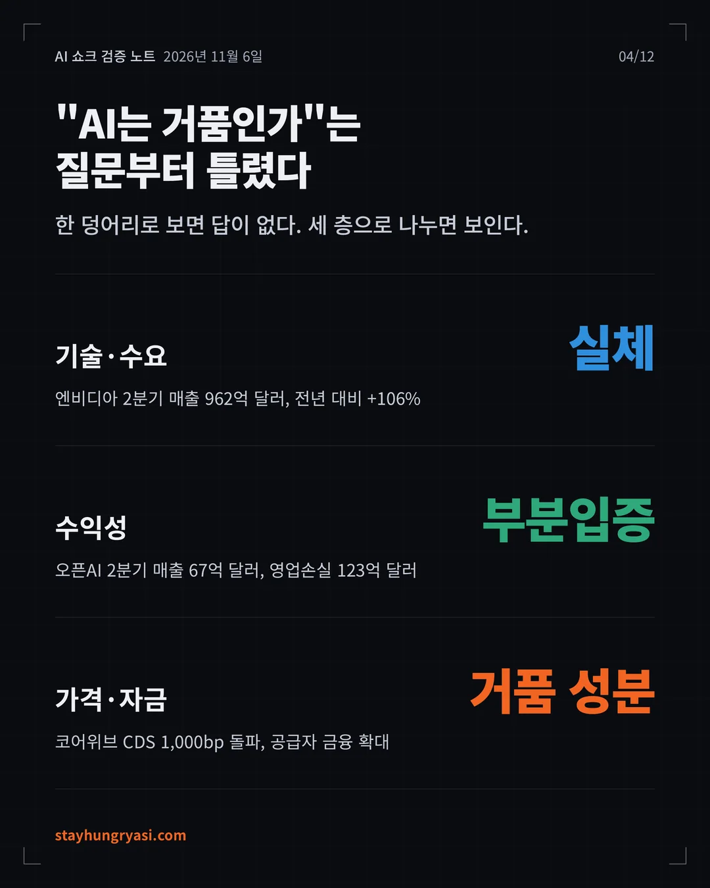

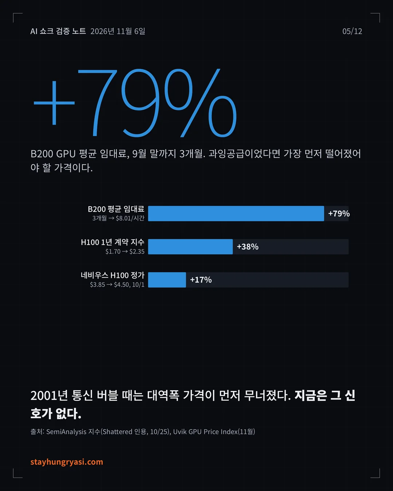

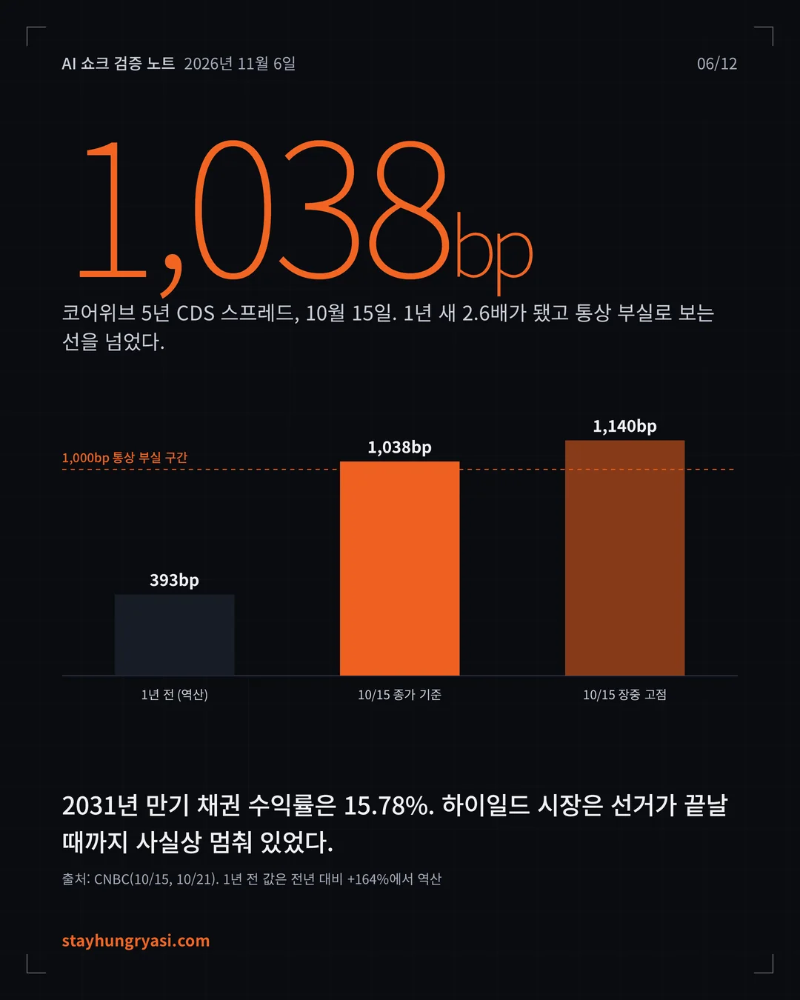

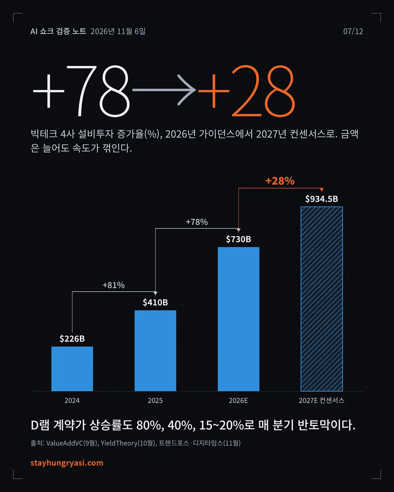

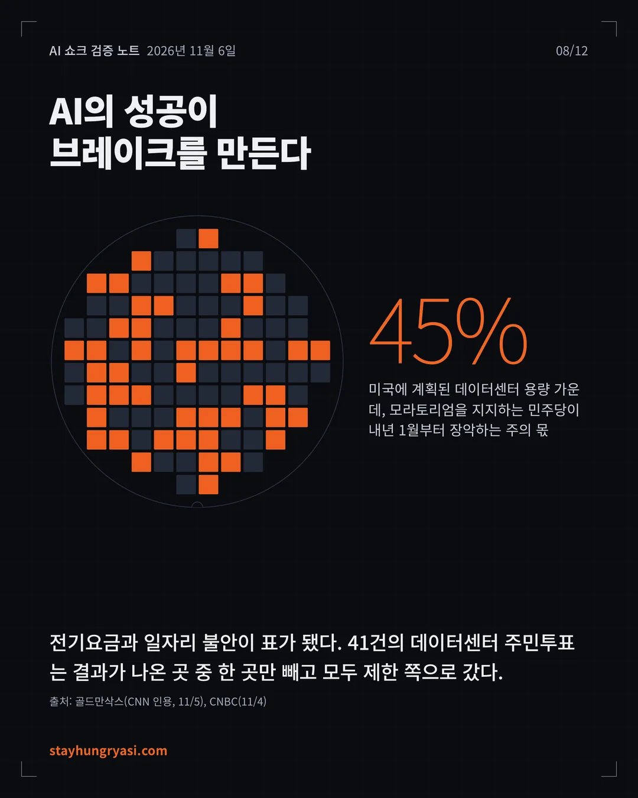

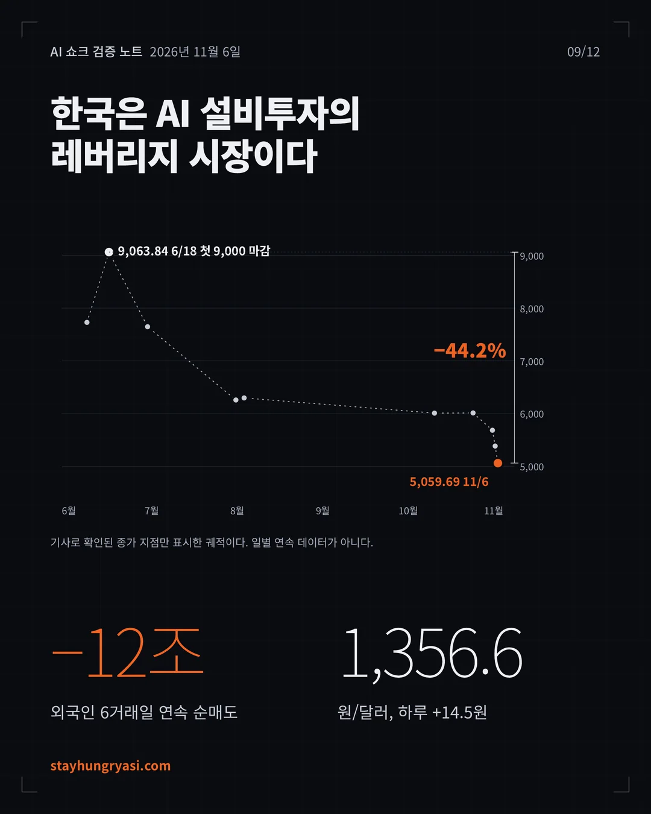

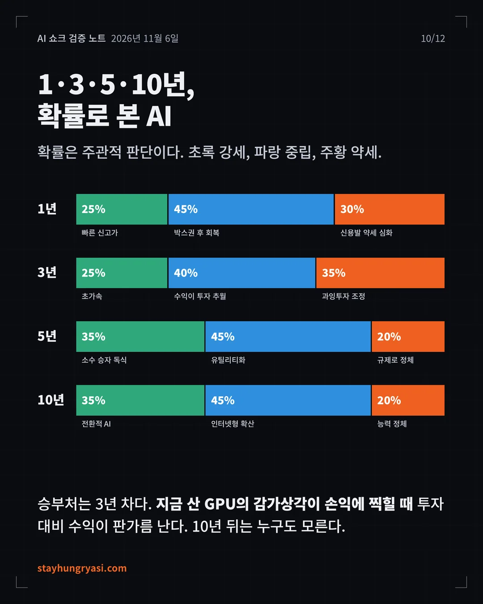

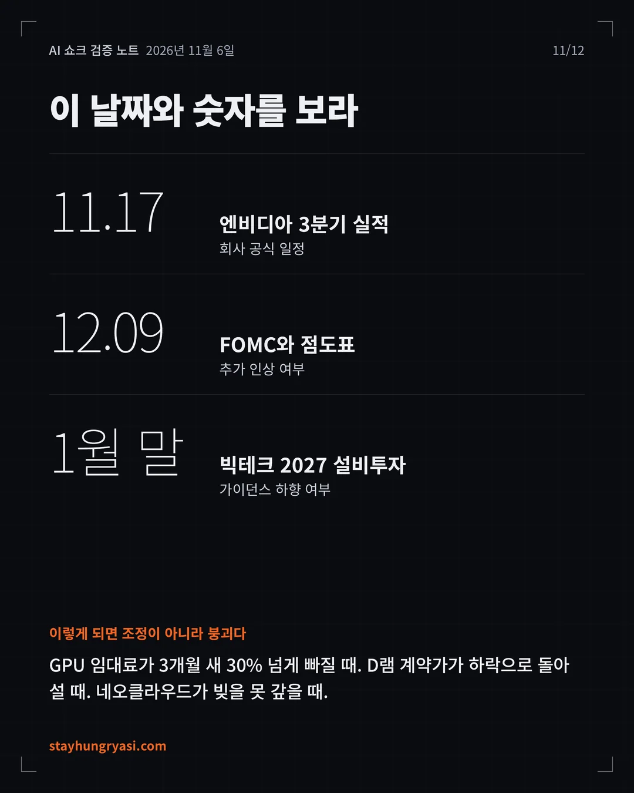

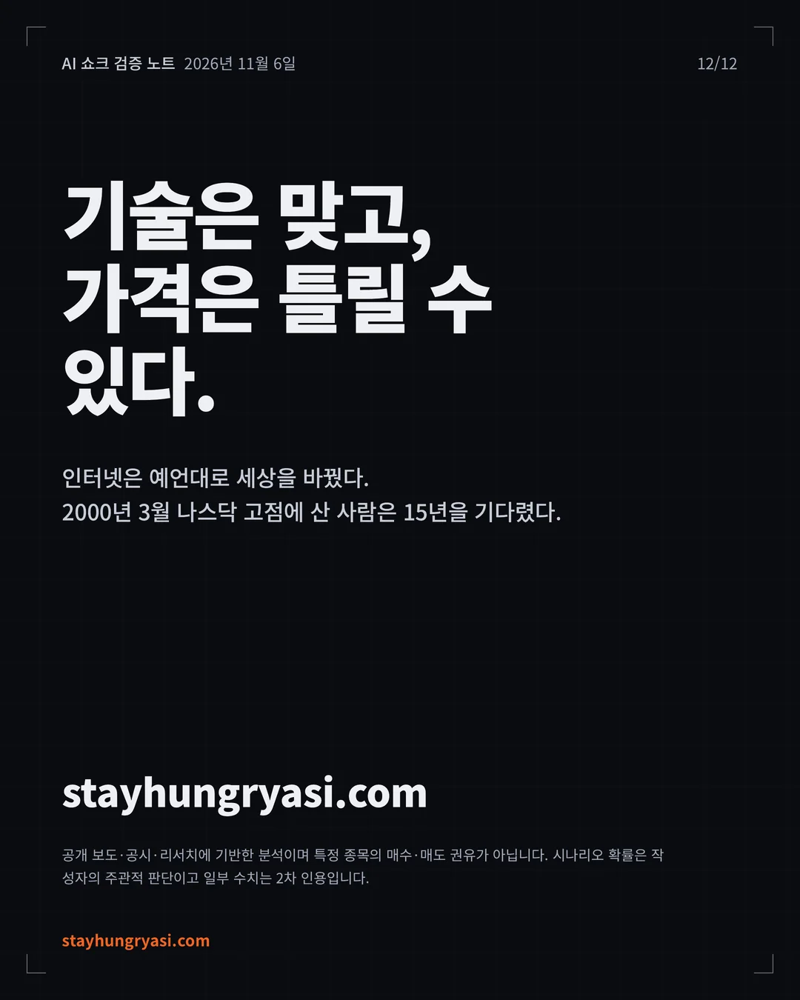
요약
- 이번 급락은 'AI 수요 붕괴'가 아니라 '자금조달·인허가 위기'다. B200 GPU 임대료는 3개월 새 79% 올랐고 4분기 D램 계약가도 15~20% 올랐다. 반면 코어위브 5년 CDS는 1,038bp로 통상 부실로 보는 선을 넘었고, 데이터센터 주민투표 41건은 결과가 나온 곳 중 한 곳만 빼고 모두 제한 쪽으로 갔다.
- 세 개 층 판정: 기술·수요는 실체(확신 높음), 비즈니스 수익성은 부분입증(중간), 자산가격·자금구조에는 거품 성분(확신 높음)이 있다. 오픈AI는 2분기 매출 67억 달러에 영업손실 123억 달러를 냈다.
- 판가름은 11월 17일 엔비디아 실적과 1월 말 빅테크의 2027 설비투자 가이던스다. 설비투자 증가율은 2026년 78%에서 2027년 컨센서스 28%로 꺾인다. 시나리오 확률은 1년 기준 박스권 후 회복 45%, 신용발 약세 심화 30%, 빠른 신고가 25%(작성자 판단)이며, 바닥은 예측하지 않는다.
1. 무슨 일이 일어났나
11/4 밤 퀄컴·Arm의 엇갈린 실적과 11/3 중간선거의 민주당 압승이 겹치며, 11/5 미국 AI 인프라주가 급락했고 11/6 아시아로 번졌다.
그림 1. 이틀간의 충격: 종목·지수별 등락률
| 구분 | 사실 | 출처·일자 |
|---|---|---|
| 미국 지수 | 나스닥 -5.5%, S&P500 약 -4.4%, 다우 약 -1,833p(-3.4%) | CNBC, 11/5 |
| 시가총액 | 매그니피센트7 1조 달러 이상 증발, 엔비디아 단독 4,400억 달러 이상 감소 | CNBC, 11/5 |
| 정치 트리거 | 민주당 상·하원 장악. 10개 주 41건 데이터센터 주민투표 중 결과가 나온 곳은 노스다코타 하우드 1곳을 빼고 모두 제한 쪽 | CNBC, 11/4 |
| 실적 트리거 | Arm -13%, 퀄컴 -9.5% (11/4 장 마감 후 실적 발표) | NBC News, 11/5 |
| 한국 시장 | 09:03 서킷브레이커 1단계, 09:34 매도 사이드카. 장중 4,911.28(-8.78%)까지 밀린 뒤 5,059.69(-6.02%) 마감. 이틀 누적 -10.98% | 파이낸셜뉴스·톱스타뉴스, 11/6 |
| 환율 | 원/달러 1,356.6원(+14.5원, +1.08%). 5/12 이후 최대 상승폭, 10/1 이후 최고. 장중 1,362.2원 | 네이트(조선비즈)·베타뉴스, 11/6 |
시장의 해석은 "AI가 안 된다"가 아니었다. 데이터센터 증설이 더 느려지고 더 비싸질 것이라는 해석이 공급망 전체의 성장 기대치를 고쳐 쓰고 있다는 것이 현장 애널리스트들의 공통된 진단이다(Fox Business, 11/5). 키움증권 한지영 연구원도 규제 범위·실제 지연·AI 수요 감소 중 아무것도 확인되지 않았다는 점에서 미국 AI주 폭락을 투매 성격으로 봤다(뉴스핌, 11/6).
2. 전수검증: 초안 숫자 대조
초안에 쓴 수치를 원 출처와 다시 대조했다. 확인·보완·정정·미사용으로 나눠 기록한다.
| 판정 | 항목 | 검증 내용 |
|---|---|---|
| 확인 | 미국 지수·종목 등락률 | 나스닥 -5.5%, S&P -4.4%, 반도체지수 -12.3%, 엔비디아 -9.2%. 복수 매체 일치 |
| 확인 | 코스피 종가·저점 | 5,059.69(-6.02%, -324.11p), 장중 4,911.28(-8.78%). 09:03 서킷브레이커 1단계. 비즈니스코리아·톱스타뉴스·뉴스핌 3곳 일치 |
| 확인 | 엔비디아 실적일 | 11/17(화) 장 마감 후, 회사 공식 공지(10/28). 일부 트래커의 11/18은 확정 전 추정치 |
| 확인 | 연준 9월 인상 | 9/16 만장일치 +25bp → 3.75~4.00%, 2023년 7월 이후 첫 인상 |
| 확인 | 코스피 9,000 돌파 | 6/18 종가 9,063.84로 사상 첫 9,000 마감, 6/19 장중 9,331 |
| 보완 | 외국인 11/6 순매도 금액 | 2조7,692억~2조8,395억원으로 출처별 상이(집계 시점 차이). 범위로 표기 |
| 보완 | 앤트로픽 3분기 매출 | 168억 달러(CNBC 인용)와 170억 달러(S-1 집계)로 상이. 재판매 매출 총액 인식이라 순액 기준 경쟁사와 직접 비교 불가 |
| 보완 | "1분기 GDP 성장의 약 3/4" | BEA 공식 수치가 아닌 애널리스트 계산 추정치 |
| 보완 | 알파벳 설비투자/영업현금흐름 121%, 하이퍼스케일러 FCF -90% | 리서치 집계 사이트 단일 출처. 교차 확인 못함 |
| 보완 | 연준 이후 경로 | 10/28 동결(10대 2). 12/9 인상 확률 약 81%는 10/5 시점 수치로, 이번 급락 후 변했을 수 있음 |
| 정정 | "1999년 나스닥 고점" | 2000년 3월 고점이 정확. 회복은 2015년(약 15년)으로 결론은 동일 |
| 2차 정정 | 삼성전자·SK하이닉스 낙폭 | 장중가 → 종가 기준으로 교체. 18만8,700원(-6.35%), 113만2,000원(-10.44%). 낙폭 -51.0%→-49.0%, -62.7%→-62.1% |
| 2차 삭제 | "S&P500·다우 2025년 4월 이후 최악의 하루" | 원문 확인 실패, 삭제 |
| 2차 삭제 | 업종별 등락률 수치, 서킷브레이커 발동 시점 지수 4,924.61 | 마감 시황 기사 3곳에서 재확인 실패, 정성적 서술로 대체 |
| 2차 정정 | 신입 채용 공고 -35% | "2023년 1월 이후, HBS 인용" → "2023년 초 이후, Revelio Labs(Fast Company 인용)" |
| 미사용 | 앤트로픽 SPV 칩 리스 부채 710억 달러 | 개인 블로그 출처로 검증 불가, 제외 |
새로 발견해 결론을 바꾼 세 가지: GPU 임대료 상승, 코어위브 신용 스트레스, 메모리 가격 상승률 둔화.
3. 세 개 층 판정
기술·비즈니스·자산가격을 한 덩어리로 보면 "AI는 거품인가"라는 질문 자체가 잘못 세워진다.
| 층 | 판정 | 확신도 | 핵심 근거 |
|---|---|---|---|
| ① 기술·수요 | 실체 | 높음 | 엔비디아 2분기 매출 962억 달러(+106%), 3분기 가이던스 1,080억 달러. GPU 임대료 상승 |
| ② 비즈니스 수익성 | 부분입증 | 중간 | 매출은 급증, 영업이익은 적자 또는 흑자 전환 후 재적자 |
| ③ 자산가격·자금구조 | 거품 성분 | 높음 | 네오클라우드 채권 부실 구간, 공급자 금융, 현금흐름 악화 |
그림 2. 과잉공급이면 먼저 떨어져야 할 가격이 오른다
그림 3. AI 연구소 손익: 매출은 실체, 이익은 미입증 (10억 달러)
① 기술·수요: 실체. 앤트로픽의 2026년 상반기 매출은 163억 달러로 전년 동기 12억 달러에서 크게 늘었고(Built In, S-1 기반), 3분기 매출은 168억 달러로 2분기보다 약 45% 증가했다(FutureSearch, CNBC 인용). 오픈AI의 연환산 매출은 9월 말 약 500억 달러이며 연말 700억 달러 이상이 목표다(Bloomberg, 10/8). 가장 중요한 증거는 가격이다. 과잉공급이었다면 GPU 임대료가 먼저 무너졌어야 하는데, 반대로 오르고 있다.
② 수익성: 부분입증. 오픈AI는 2분기 매출 67억 달러에 영업손실 123억 달러를 냈고, 2026~2030년 누적 마이너스 잉여현금흐름 전망은 2,780억 달러다(FT, 2026.9, Sacra 인용). 앤트로픽은 2분기 첫 영업흑자 뒤 3분기에 다시 적자로 돌아섰고, 상위 5개 고객이 첫 9개월 매출의 약 25%를 차지한다.
③ 자산가격·자금구조: 거품 성분. 코어위브 2031년 만기 채권 수익률은 15.78%, 5년 CDS 스프레드는 한때 1,140bp를 넘었다(CNBC, 10/15). 하이일드 시장은 데이터센터에 대한 정치적 반발 때문에 중간선거 이후까지 사실상 멈춰 있었다(CNBC, 10/21). 엔비디아는 코어위브의 미판매 용량을 2032년 4월까지 매입하기로 약속했다(InsiderFinance, 10/16).
4. 강세론 대 약세론
한쪽만 보면 실패다. 양쪽의 가장 강한 근거를 숫자로 나란히 놓는다.
| 강세론: 가장 강한 근거 | 약세론: 가장 강한 근거 |
|---|---|
| 공급 부족 공식 확인. 마이크로소프트는 수요가 공급을 극단적으로 초과한다고, 알파벳은 여전히 공급 제약 상태라고 밝힘(IO Fund, 2분기 실적 콜) | 증가율 둔화. 4대 하이퍼스케일러 설비투자 증가율 2026년 +78% → 2027년 컨센서스 +28% |
| 수요의 질. 엔비디아는 2027년(회계 2028년) 매출 약 70% 성장 전망. 당시 투자자 기대는 약 44%(XTB, 8/27) | 현금 고갈. 알파벳 3분기 설비투자가 영업현금흐름의 121%, 하이퍼스케일러 FCF 약 90% 감소 전망(단일 출처) |
| 매출 궤적. 오픈AI 연환산 매출 500억 → 연말 700억 달러 이상 목표 | 금리. 9월 인상, 10월 동결(10대 2), 12월 인상 가능성 잔존 |
| 실물 가격 상승. B200 임대료 3개월 +79%, D램 4분기 계약가 +15~20% | 인허가. 모라토리엄 확대 지지 민주당이 장악한 주가 미국 계획 데이터센터 용량의 45%(골드만삭스) |
그림 4. 하이퍼스케일러 설비투자: 금액은 늘고, 증가율은 꺾인다
그림 5. D램 계약가 전분기 대비 상승률
45%
미국 계획 데이터센터 용량 중, 모라토리엄 확대를 지지하는 민주당이 내년 1월부터 장악하는 주의 몫. 다이 1개가 1%다. 웰스파고는 텍사스 한 주가 계획 용량의 27%를 차지한다고 추정했다.
5. 역사적 비교와 파괴적 통찰
닷컴(1999~2002), 통신 버블(1996~2002), 철도 버블(1840년대 영국), 2022년 긴축과 비교했다.
| 같은 점 | 다른 점 |
|---|---|
| 공급자 금융. 2000년 루슨트·노텔의 벤더 파이낸싱과 같은 구조. 엔비디아는 5,000억 달러 이상 외부 자본을 끌어오는 금융 플랫폼을 공개하고 코어위브 미판매 용량까지 보장 | 실물 가격이 오른다. 2001년 광섬유 대역폭 가격은 붕괴했지만 지금 GPU 임대료·D램은 상승 중. 과잉 설비의 증거가 아직 없음 |
| 금리 인상 국면의 균열. 2000년·2022년처럼 금리 상승이 AI 운영사 주식·채권 급락을 부추기고 AI 인프라 IPO를 연기시킴(Reuters, 10월) | 매출이 실재. 앤트로픽 한 곳의 분기 매출이 168억 달러. 닷컴의 '매출 없는 성장'과 다름 |
| 극단적 집중. 6월 기준 삼성전자·SK하이닉스가 코스피 시총의 약 50%(2차 인용) | 브레이크가 정치. 기술의 성공 자체(전기요금, 일자리 불안)가 표로 바뀌어 투자를 막는 구조 |
파괴적 통찰 다섯 가지
- 실물과 금융의 괴리. GPU·메모리는 부족한데 정크본드 시장은 얼었다. 이런 위기는 레버리지가 가장 큰 곳(네오클라우드)부터 터지고 공급자로 번진다. 먼저 볼 지표는 엔비디아 실적보다 코어위브 채권이다.
- 엔비디아가 '최후의 구매자'. 고객의 자금을 대고 못 판 용량까지 사준다. 수요 일부가 엔비디아 대차대조표에서 나오며, 순환 리스크가 한 곳에 집중된다.
- AI의 성공이 브레이크를 만든다. 2월에는 AI 세무설계 출시로 자산관리주가 수수료 붕괴 우려에 급락했고, 이번엔 전기요금·일자리 불안이 규제로 돌아왔다. 오픈AI는 이미 전력·인프라 비용 전액 부담을 발표했다.
그림 7. 코어위브 5년 CDS 스프레드
- 한국은 2차 미분을 두 번 맞는다. 설비투자 증가율 둔화와 메모리 가격 상승률 둔화(80→40→20%)가 겹쳤다. 매출이 늘어도 주가가 떨어지는 구간이다.
- 우주도 AI 설비투자 묶음 안. S&P글로벌 6개사 모델(9월 초)이 스페이스X의 2027 설비투자를 1,970억 달러로 포함했다. 우주는 비AI 분산 수단이 아니다.
6. 시간대별 시나리오
모든 확률은 주관적 판단이며 예측이 아니라 사고의 틀이다. 10년 구간은 선행 지표로 판별할 수 없다.
그림 8. 시나리오 확률 분포 (주관적 판단)
| 시계 | 핵심 질문 | 시나리오 (확률) | 확인시켜 줄 선행 지표·트리거 |
|---|---|---|---|
| 1년 | 자금조달 경색이 실제 증설 축소로 번지는가 | 박스권 후 회복 45% 신용발 약세 심화 30% 빠른 신고가 25% | 회복: GPU 임대료 유지, 코어위브 재조달 성공 약세: 네오클라우드 부실, 주 단위 모라토리엄 통과, 12월 인상 신고가: 엔비디아 가이던스 상향, 앤트로픽 상장 흥행 |
| 3년 | 투자 대비 수익이 증명되는가(GPU 감가상각 반영기) | 수익이 투자 추월 40% 과잉투자 조정 35% 초가속 25% | 추월: AI 매출 성장률 > 컴퓨트 약정 증가율 조정: GPU 임대료 3개월 -30% 이상, D램 하락 전환 초가속: 에이전트의 인건비 대체 데이터 |
| 5년 | 병목(전력·메모리·인허가)을 누가 쥐는가 | 유틸리티화 45% 소수 승자 독식 35% 규제로 정체 20% | 전력망 투자 법안, 데이터센터 비용 분담 표준화 여부 |
| 10년 | 이익은 누구에게 가는가 | 인터넷형 확산 45% 전환적 AI 35% 능력 정체 20% | 판별 불가: 모른다 |
노동시장 참고: 2026년 2월 미국 실업률 4.4%였으나 미국 신입 채용 공고는 2023년 초 이후 약 35% 감소(Revelio Labs, Fast Company 인용, 2026.7). 대량 해고가 아니라 '첫 사다리가 사라지는' 방식으로 진행 중이며, 2028년 대선에서 AI가 핵심 쟁점이 될 가능성이 크다.
7. 한국 증시 연결고리
한국은 AI 설비투자의 가속·감속에 세계에서 가장 크게 반응하는 시장이다. 11/5 코스피 하락률 5.3% 중 반도체 기여도가 약 4.6%포인트였다(키움증권, 뉴스핌 인용).
그림 9. 코스피 확인 종가 궤적과 고점 대비 낙폭
그림 10. 외국인 코스피 순매도 (조원)
| 연결고리 | 관찰 |
|---|---|
| 표적 | 11/6 외국인은 SK하이닉스 1조9,240억원, 삼성전자 1,286억원 순매도. 순수 AI 메모리(HBM)가 집중 표적: 'HBM 2차 미분'에 대한 베팅으로 해석 |
| 업종 | 반도체·전력기기·배터리·조선이 급락하고 통신주만 상대적으로 버팀(톱스타뉴스, 11/6) |
| 환율 | 외국인 매도 → 달러 송금 수요 → 원화 약세. 10/28 1,320원대에서 11/6 1,356.6원 |
| 연간 수급 | 올해 외국인 코스피 누적 순매도 219조6,955억원(비즈니스코리아, 11/6) |
8. 30~90일 일정과 판별 대시보드
"거품 붕괴인가, 건강한 조정인가"를 가를 일정과 지표.
| 날짜 | 이벤트 | 확인 수준 |
|---|---|---|
| 11/6 (미국 밤) | 미국 10월 고용보고서 | 보도(비즈니스코리아) |
| 11/9 주 | 앤트로픽 투자자 마케팅 시작 예정 | Reuters 보도, 연기 가능 |
| 11/17 장 마감 후 | 엔비디아 3분기 실적(컨센서스 매출 1,088억 달러) | 회사 공식 |
| 11/26 전후 | 앤트로픽 상장 목표 시점. 놓치면 1월 말~3월로 밀릴 가능성 | 추정 |
| 12/9 | FOMC + 점도표 | 연준 일정 |
| 2027년 1월 초 | 새 의회 개원, 주 의회 개회, 신임 주지사 취임 | 제도상 관행 |
| 1/27 | FOMC | 연준 일정 |
| 1월 말~2월 | 하이퍼스케일러 4분기 실적·2027 설비투자 가이던스, 삼성전자·SK하이닉스 4분기 실적 | 관행 추정 |
| 지표 | 현재 | 건강한 조정 | 거품 붕괴 신호 |
|---|---|---|---|
| ① GPU 임대료 | B200 +79%/3개월 | 유지·상승 | 3개월 -30% 이상 |
| ② D램 계약가(QoQ) | +15~20% | 플러스 유지 | 마이너스 전환 |
| ③ 코어위브 채권·CDS | 수익률 약 16%, CDS 약 1,000bp | 하락, 재조달 성공 | 지급 유예·재조달 실패 |
| ④ 2027 설비투자 가이던스 | 컨센서스 9,345억 달러 | 유지·상향 | 하향 + "규제로 인한 지연" 언급 |
| ⑤ 엔비디아 재고·매출채권 | 320억 달러, 60일 | 안정 | 2개 분기 연속 증가 |
| ⑥ 주 단위 입법 | 공약 단계 | 비용 분담 규칙으로 타협 | 인허가 중단 법안 통과 |
| ⑦ 외국인 수급·원달러 | 6일 연속 매도, 1,356원 | 순매수 전환 | 1,400원 돌파 + 매도 지속 |
출처
- CNBC: Magnificent 7 loses $1 trillion (11/5)
- NBC News: Stocks plunge as election outcome and AI worries crush tech (11/5)
- Fox Business: Stocks plunge as Dem midterm sweep fuels AI regulatory concerns (11/5)
- Kingy AI: AI Stock Selloff Nov 5 2026
- CNBC: Voters rebuff data centers in ballot measures (11/4)
- CNN: America got the anti-data-center wave it voted for (11/5)
- 톱스타뉴스: 코스피 6.02% 폭락 마감 (11/6)
- 비즈니스코리아: 검은 금요일 마감 시황 (11/6)
- 뉴스핌: 코스피 6% 급락에 5000선 턱걸이 (11/6)
- 뉴스웨이: 삼성전자·SK하이닉스 종가 (11/6)
- 네이트(조선비즈): 원/달러 6개월 만에 최대폭 상승 (11/6)
- NVIDIA: 3분기 실적 컨퍼런스콜 공지 (10/28)
- SentiSense: 엔비디아 2분기 실적과 3분기 가이던스 (8/26)
- CNBC: CoreWeave CDS hit distress levels (10/15)
- CNBC: CoreWeave market confidence erodes (10/21)
- Shattered: B200 cloud price +79% (10/25)
- Uvik: GPU Price Index (11월)
- 퀘이사존(트렌드포스·디지타임스 인용): 4분기 D램 상승률 둔화
- Luminix: Hyperscaler capex Q3 2026
- CNBC: Microsoft, Google capex (10/29)
- Bloomberg via Yahoo: OpenAI expects $70B annualized revenue
- AI Funding Tracker: Is OpenAI losing money?
- Exploding Topics: Anthropic revenue
- Reuters via Khaleej Times: Anthropic IPO stands alone
- SimianX: Fed rate decision history
- Admiral Markets: FOMC October 2026 hold
- 서울신문: 코스피 사상 첫 9063.84 마감 (6/18)
- ING Think: How much is AI contributing to US growth?
- Revelio Labs: Entry-level job postings are down 35%
본문에 함께 인용한 ValueAddVC·YieldTheory·XTB·IO Fund·Sacra(FT 인용)·FutureSearch·Built In·InsiderFinance·트윅24·세계일보·파이낸셜뉴스 자료는 각 표와 그림 설명에 출처와 날짜를 적었다.
stayhungryasi.com · 정보 제공 목적의 리서치이며 투자 권유가 아니다. 투자 판단과 책임은 투자자 본인에게 있다.